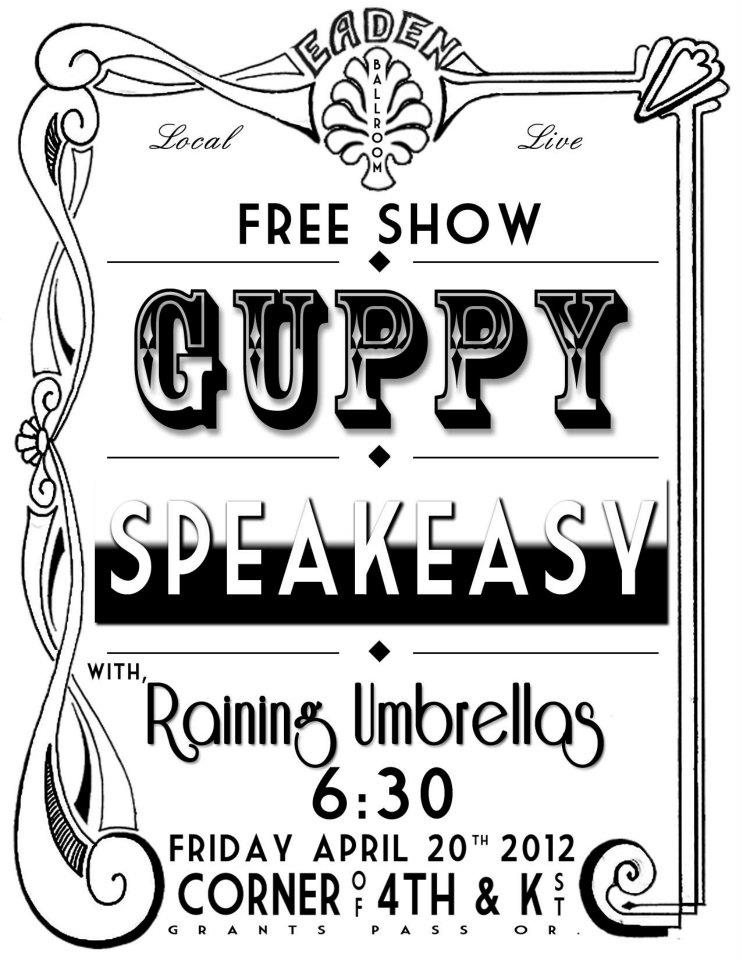

I was born in Roseville, CA to parents Jennie Bender and Daniel Webb. At the age of 2, my mom and I moved to where I still currently reside: beautiful Southern Oregon. Though initially we moved to Medford, Grants Pass became the town I will forever call home.
All of my high school years were thankfully spent at the rural Hidden Valley High School just on the outskirts of Grants Pass. It was during these years that I discovered many of the passions in my life including running, music, and - oddly enough - math. After getting cut from the basketball team, I joined the Track team simply because I wanted to participate in some sort of athletics; little did I anticipate what it would blossom in to. It was also here that I helped form my first band with my best friends. We were called Reigning Umbrellas and although we never made it to the "big time" it was our small group that sparked my love for playing music. Of all the experiences I have had in my life, none of them have been like playing music in front of a live audience. Like most teenagers attending high school, I didn't particluarly like the "school" aspect of it, but of all the subjects, I had quite a predilection for math. As I advanced through the levels of algebra and calculus, gaining the acceptance from the Math Gods each step I took, I soon realized that whatever career path I chose, I wanted it to heavily involve math.
I graduated Hidden Valley in 2013 and was a co-Valedictorian of my class - alongside Morgan Hansen. Throughout High School, I flirted around with many different groups and clubs, including Mock Trial, Poetry Out Loud, Mathletes, Academic Challenge, Academic Masters, Swim Team, and was not to mention Vice-President of our National Honor Society. Though I had fun with many of these organizations, none of them were as dear to me as running or music; those were things that I held as my priorities, along with my friends, grades, and family. I left Hidden Valley having established many great friends and memories along with the discovery of my interests, ready to move on and puruse my future career.
Music was an interest of mine at an early age. My father played guitar and I believe it was watching him jam on his old fender strat on warm summer nights that influenced my desire to play. On my 9th birthday, I finally got my first guitar - that I still have and play to this day. It was a simple black fender acoustic guitar; not the most prestine guitar ever but certainly a step above the average "beginner's" guitar. I enrolled in guitar lessons for a few months until we could no longer afford it. I lost interest in playing music till I was about 13, where I picked up guitar again and had lessons for a few months for the second time. During this time, I discovered I could learn the insturment fairly quickly. Once I was able to read tableture and was told that practically any song's tableture was on the internet, I stopped taking lessons and became self-taught; I had been given enough foundation. I have been playing guitar ever since.
My true instument of passion was discovered in a somewhat unorthodox way. I wasn't much a gamer as a kid like most of my other friends, but one game I really enjoyed was Guitar Hero and its counterpart Rock Band. One Christmas, (I believe it was during my 8th grade year) I finally got Rock Band, something I had been asking for for the entire year. After beating the guitar portion of the game, I ventured into the drums which were much more similar to the real instrument than guitar or bass; real beats could actually be played that for the most part, matched up with the actual song. I picked up on this part of the game surprisingly fast and realized and I had quite a sense of rhythm and predilection for it. Not soon after this was I begging and pleading my parents to buy me a real drumset. They were of course quite hesitant to do so as we lived in a small, cluttered mobile home that would create a major nuisance if I were to play. To my disbelief, for my 14th birthday, my mom got me an offbrand used drumset and let me keep it in the house. The downside: it didn't come with any cymbols, a very crucial part of the instument. Though I was able to start playing it, I wasn't able to play or learn my kit to its fullest potential. Some time later a friend of my dad's gave me beginner's practice kit that was much smaller than the one I had. However, the set did come with two cymbols - a hi-hat and a small crash. The cymbols were cheap and of not good quality, but I immediately added them to my current kit. It was then that I truly was able to play the drums and is when I fell in love with them. I realized that this was the instrument I wanted to play. Guitar was great, but it didn't have the same amount of energy as the drums. Plus, I was better at them and felt like I stood out more playing drums over guitar.
I wasn't the only one in the 8th grade who liked playing music. I had made two friends in particular - Johnny Gerson and Joe Bushnell - who liked the similar style or rock and alternative rock as I did. Johnny played a little guitar but mostly keyboards and could sing and actually write songs and Joe was an exceptional lead guitarist for his age. Just before middle school concluded, the three of us (almost jokingly) talked about forming a band. I told them as soon as I got a drum set we could get serious. By the time high school started, Johnny and I had started meeting up and playing a little bit together - these endevours of which would usually occur in his truck filled garage at 2AM. I would play rhythm guitar on my electric and he would jam out some melodic keyboards and occasionally sing. Sometimes we would play other band's songs and other times we would mess around and write small pieces to songs. One of our best moments was when one weekend Johnny came over to my house for a change. We brought my partial drum set out in the back yard on a piece of plywood along with extension chords to plug in a guitar amp and his keyboard. Something magical that day and I will never forget what Johnny told his mom later on the phone when asking to stay long: "We are starting to get good at music." I remember it as some of the funnest times throughout my youth. At some point, almost full songs started getting organized together, but we were missing lead guitar, bass and a band name. For hours on end, Johnny and I would sit in his kitchen thinking of potential band names, but none of them seemed right. One day at school, in the most random of times, Johnny approached me and simply said "I know what the name of our band is. Raining Umbrellas."" He was so sure about the name that I didn't even question it; it was more like the name had chosen us. Remembering our friend Joe, we asked him to jam with us and create some leads for our songs. Unfortunately, not much success came out of this and Joe was often pre-occupied and not as interested as Johnny and I. Even though we weren't an actual band yet, Johnny and I decided to "fire" Joe and seek out other options.
I believe close to a year went by without Johnny and I finding anyone else to join our band. Once Joe was out of the picture, I was primarily hanging out with Johnny who was close friends with another guy named Matthew Vaughn. I had known Matt through school and he and were also pretty good friends so consequently, the three of us began to hang out a lot. Matt, however, only played piano (and was very good at it) but thus couldn't really be in our band at the time. Because of this, Johnny and I would always jokingly tell Matt that he should learn to play bass so he could be in our band. Then, literally out of nowhere, towards the end of our sophomore year, Matt acquired a bass and amp and started asking us how he should learn to play the thing. We told him to learn to read tableture, which came easy to him since he could already read sheet music, to learn scales, and to learn songs from the Red Hot Chili Pepper's as they were a strong band of influence in our music and have one of the best bassists in the world. Shortly thereafter, Matt was able to play the bass. Matthew was and still is probably the most musically inclined out of the three of us and learned to play bass extremely fast. He was really good at it too. No we finally had the appropriate aresenal to actually start a band, and that fact that the three of us were all best friends made it all the more worthwhile.
As Junior year approached, we decided to start the band as a three-piece. Johnny was to switch between playing keyboards and guitar and to sing, Matt to play bass and occasionally play keyboard, and I to play drums. However, we still didn't have a set place to practice. After trying to crap into my tiny mobile home, Matt suggested he ask his Dad if we could clear out their shed and practice in there. Immediately, this because the home ground of Raining Umbrellas and all its creations. From that day forward, our place of practice was infamously known as "The Shed."
Not long after we had start wriitng songs and practicing, our first opportunity arised. Open auditions were being held for a cabaret type performance to be held as a fundraiser for a fellow friend and classmate CJ Severson who had recently been paralyzed from a trampoline accident. Though the auditions were held only one week after Johnny had gotten ACL surgery, the band was still able to perform. We were the last group to audition, and afterwords the director of the event asked us to be the house band for the show, playing all the music behind any singing group. We of course accpted. This was to be our first live performance. Shortly after this occured, I got a phone call while the band was on our way to practice at The Shed asking us to play at a local show coming up at a small church. The even was called Eaden Ballroom and we were to open for two other bands Speakeasy and Guppy. he had found out about us because through his son's bandmate's little brother Ty Kabot, who was a schoolmate of ours (yes, word got around). At the time, we only had 4 songs written, and they weren't even completed all the way. We only needed to fill a half hour set, so we agreed and set to work on finsihing our songs. Strangely enough, this show was to become our first live performance as it was one week prior to the Benefit Show. A little more fitting considering here we would actually be playing our own original songs. The show was held on April 20th, 2012 and I will never forget. It was that night that I truely fell in love with performing live.
Over the course of the next year, Raining Umbrellas wrote countless songs and played several shows, mostly at the church Eaden Ballroom but also several other locations throughout our town, Medford, and Ashland. The name was changed to Reigning Umbrellas simply changing the spelling and meaning of the first word. I personally wasn't to involved in this, but didn't mind it. Our biggest accomplishment, however, occured the weekend before senior year started in the summer of 2012. At this point, RU had roughly 10 songs and we were wanting to do some recording. A friend of ours who lived out in Williams (just outside of Grants Pass) put in a good word for us at the studio out there called Pacifica - originally built and owned by the Steve Miller Band in the 1970's. Shortly after, we recorded what we called our first demo. The demo, titled "RU Ready?" had 6 tracks that provided a good range of the style of music we played. The demo was recorded by a quirky drum engineer by the name of Dennis Dragon. We were able to record the entire demo in just one day and to this day, it was one of the most exciting days of my life; hearing our own songs blast through his magnificent PA system that my band and I had created ourselves was breathtaking. The demo is available for purchase and can be accessed here. Our songs "Recessitation" and "Dead End" can be listened to by clicking the videos below. All other songs recorded are also available via YouTube. If you are interested in seeing more (mostly pictures), click here to access the band's facebook page.
Unfortunately, at the end of high school, all three of us from Reigning Umbrellas were heading towards different directions. I was going to OIT in Klamath Falls and Matt was heading to the University of Oregon in Eugene. Johnny, meanwhile, was staying in Grants Pass to continue working and to go to the community college in our town. Since then, Reigning Umbrellas has yet to reunite. Rumors of a reunion show have circulated in the past, but things just never seem to coincide with the three of us. Stay tuned to hear more.